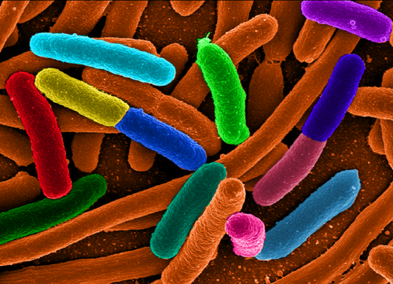

02-21-2012 10:19PM (ET)

I was recently interviewed by Kerry Grens from the-scientist.com on the subject of infobiology research carried out at Tufts University. The authors present their work in the paper 'InfoBiology by printed arrays of microorganism colonies for timed and on-demand release of messages,' pdf available here. The research got quite a bit of press. I really enjoyed this paper and I want to talk about the ideas presented and some ideas I had for improving its security.
How does it work: The basic idea is this (explained using the typical Alice/Bob scenario):
The e. coli strains are modified so that they grow only in certain growth mediums allowing the growth medium to act as a secret-key for the message (i.e. if you don't know the growth medium you can't grow the e. coli and thus can't develop the message).
For the sake of discussion, lets name the strains 0, 1, 2, 3 and refer to the growth mediums as A, B, C, D.1 The marks on velvet will be represented by a series of parentheses proceeded by a $\text{V}$. For example velvet with the first mark being strain 1, the second mark being strain 3, the third mark being strain 2 would be represented as: $\text{V}[(1),(3),(2)]$. Marks can contain more than one strain which is represented as: $\text{V}[(1,4),(2,3),(2,4)]$.
Because marks can contain more than one strain, it is possible to encode more than one message on the velvet. For example if medium A grows only strain 1 and 2 and medium B grows only strain 3 and 4, then the velvet "ciphertext" $\text{V}[(1,4),(2,3),(2,4)]$ would decode to either $1,2,2$ or $4,3,4$ depending on the growth medium used.
Using these rules, this biological system acts as though it is a simple cipher. A bio-cipher.
The Security Properties: The security properties of the bio-cipher are:
The system can be attacked in a number of ways if the assumptions that justify the security properties can be violated. For instance the point that I made in the interview was that SNP-chips or another mechanism6 could be used to detect which strains were located in which marks on the velvet without developing the message violating security principals 1, 2, 4, and 5. That is, the security of the system rests on the assumption that the only way to learn the message is to develop it4.
Brute Forcing the Key: The attack I want to talk about is brute forcing the keyspace of all the possible growth media. The bio-cipher is developed by pressing the velvet into a single plate containing a single growth medium. The key space of growth medium is very limited and could be guessed by an attacker. Furthermore [Kerckhoffs's principle] (http://en.wikipedia.org/wiki/Kerckhoffs's_principle#Explanation_of_the_principle) states that:
"[A cipher system] must not be required to be secret, and it must be able to fall into the hands of the enemy without inconvenience;" - Auguste Kerckhoffs
It is best to assume that only the secret-key is secret. We must assume that an attacker, Eve, which has intercepted the velvet will know all the growth mediums. The only thing which she just will not know is which growth medium to use.2 If this space is small she might guess correctly and learn the message.
At this point one might raise the objection, why not encrypt the message with AES or some other modern cipher before encrypting it with the bio-cipher, but that in turn asks the question why use a bio-cipher at all. Just encrypt the message with AES, write it on a piece of paper and send it. The advantage of the bio-cipher is that it is very hard to detect3. The method of encoding acts as a form of invisible ink. The purpose of the key is not to make the message unreadable is it to convince the attacker that there is no message.
As an attacker has a reasonable chance of guessing the key, the bio-cipher offers only minimal protection.
Exponentially Expanding the Key Space I propose a method for fixing this weakness by transforming the bio-cipher into a bio one-time-pad. Assume we have engineered the following 4 strains and two growth mediums such that:
Each "mark" on the velvet either contains a mixture of strain 1 and strain 4 or a mixture of strain 2 and strain 3. Instead of stamping the velvet onto a single plate using a single growth medium, stamp the velvet onto a matrix of plates each containing either the growth medium A or B. The choice of which growth medium to use at each plate in matrix is the key.
The growth medium at each mark (or bit in our example) chooses which strain and color to express, but since both A and B can cause growth of a Red or Green expressing strain, the growth medium (key) reveals nothing about the message. The message without the growth medium can be any possible message, so without the key the message is meaningless and random.
Consider the velvet marked with pairs of strains like so $\text{V}[(1,4),(2,3),(2,3),(1,4)]$. If the velvet is developed on plates with the growth medium configuration $G[A, A, A, B]$ the result is a message which reads Green, Red, Red, Red. $$\text{V}[(1,4),(2,3),(2,3),(1,4)] + G[A, A, A, B] = 1,2,2,4 = \text{Green, Red, Red, Red}$$
Notice that if we flip a single bit of the key and it flips a single bit of the message.
$$\text{V}[(1,4),(2,3),(2,3),(1,4)] + G[A, A, B, B] = 1,3,2,4 = \text{Green, Red, Green, Red}$$
The bio-cipher has perfect security and we need only use two growth mediums.
Increasing the Time-Delay Using the bio one-time-pad method outlined in the previous paragraphs we can easily extend the message time delay to any length of time that we wish at the cost of longer messages. Take two velvet messages, the first message encodes the growth medium (key) for the second message (Green = A, Red = B). The second message can't be developed until the first message is developed. If the development time is $8$ hours (as stated in the paper), then using four messages we can extend the development time to $4 \times 8 = 32$ hours.
For example Alive wants to make sure it takes at least 24 for Bob to read her message so Alice sends Bob three velvet sheets and the growth medium $G[B, B, A]$ to develop the first sheet $text{V}[(2,3),(1,4),(2,3)]$.
$$\text{V}[(2,3),(1,4),(2,3)] + \text{G}[B, B, A] = 3,4,2 = \text{Red, Green, Red} \rightarrow \text{G}[B,A,B]$$
Bob develops the first sheet to and gets $3,4,2$ which he uses to determine the growth medium for the second sheet.
$$\text{V}[(1,4),(2,3),(1,4)] + \text{G}[B, A, B] = 4,2,3= \text{Red, Red, Red} \rightarrow \text{G}[B,B,B]$$
Bob develops the second sheet and learns the growth medium for the third and final sheet.
$$\text{V}[(2,3),(2,3),(2,3)] + \text{G}[B, B, B] = 3,3,3= \text{Green, Green, Green}$$
Developing the final sheet Bob learns about Alice's message. The process takes $24$ hours due to the intermediate velvet sheets.
Using 1000 messages we could extend the delay to 8,000 hours.5
The Kwisatz Haderach Cipher): One of the last sentences in the paper caught my eye. In the future work paragraph they have the following sentience:
"Sexual reproduction could be used to add another layer of complexity to the information system." - InfoBiology by Printed Arrays of Mircoorganism Colonies for Timed and On-Demand Release of Messages.
It inspired me to develop a cipher which employs as it's mechanism dominant and recessive sex linked traits. The full explanation of the cipher is a subject for a future blog entry but in short:
I'll leave the rest up to your imagination.
The authors of the paper actually had base-seven code in the paper. I changed this for the sake of the example. ↩
The strains each have selection markers added which confer antibiotic resistance. Therefore they can mix several strains onto the same "mark" on velvet. Given different growth mediums containing different antibiotics, different messages will appear. ↩↩
Another advantage is it can be decrypted without access to a computer. ↩
This is purely hypothetical, as I have limited wet lab experience. I was talking to a friend who works in a wet lab about this and he argued that it might be more difficult than it first appeared to me to learn about samples from velvet without culturing them. ↩
If you want to be more efficient you can use messages that are shorter than the final message and hash all the shorter messages together to generate the final key/growth medium. ↩
There are a number of ways to harden an organism against analysis/reverse engineering. For example a large number of repeats to complicate assembly or using combinations of plasmids such that different combinations have different results but each colony of strains will always in aggregate have the same plasmids (plasmids that turn other plasmids off and so on) or encoding one way functions (hash functions) in kinase networks. It seems completely plausible to me that one could engineer strains of e. coli which would frustrate all modern analysis techniques. If anyone with a stronger background in bioinformatics and lab techniques is interested in collaborating on a paper about bacterial sequence drop me a line. ↩